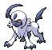

-
bulbasaur #001

- Grama
- Veneno
Há uma semente de planta em suas costas desde o dia em que este Pokémon nasceu. A semente cresce lentamente.
-
Ivysaur #002

- Grama
- Veneno
Quando o bulbo nas costas cresce, parece perder a capacidade de ficar de pé nas patas traseiras.
-
Venusaur #003

- Grama
- Veneno
Sua planta floresce quando está absorvendo energia solar. Ele permanece em movimento para buscar a luz do sol.
-
Charmander #004

- Fogo
Tem preferência por coisas quentes. Quando chove, diz-se que o vapor jorra da ponta de sua cauda.
-
Charmeleon #005

- Fogo
Tem uma natureza bárbara. Em batalha, ele chicoteia sua cauda de fogo e corta com garras afiadas.
-
Charizard #006

- Fogo
Ele cospe fogo que é quente o suficiente para derreter pedras. Pode causar incêndios florestais soprando chamas.
-
Squirtle #007

- Água
Quando retrai seu longo pescoço em sua concha, esguicha água com força vigorosa.
-
Wartortle #008

- Água
É reconhecido como um símbolo de longevidade. Se sua casca tiver algas, aquele Wartortle é muito velho.
-
Blastoise #009

- Água
Ele esmaga seu inimigo sob seu corpo pesado para causar desmaios. Em uma pitada, ele se retirará para dentro de sua casca.
-
Absol #0359
- Noturno
Rápido como o vento, Absol corre pelos campos e montanhas. Seu chifre curvo em forma de arco é extremamente sensível aos sinais de alerta de desastres naturais.